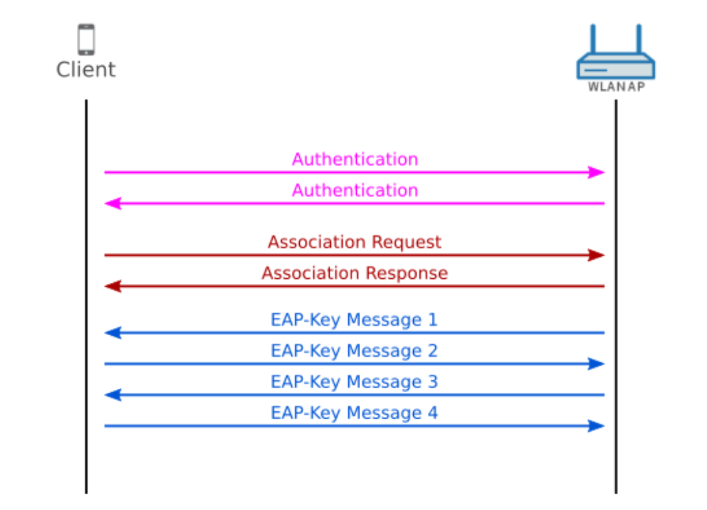

WPA3 Networks
Since WEP, WPA and WPA2 protocols have their own type of vulnerabilities that attackers like us abuse the fuck out of, the industry has tried to better secure wireless networks by implementing a new standard called WPA3.
WPA3 was created and introduced in 2019 but for me personally I haven't really encountered too many networks secured with WPA3 but this chapter is meant to get you up to date.
WPA3 only uses "Advanced Encryption Standard" (AES) and no longer uses older protocols like the "Temporal Key Integrity Protocol" (TKIP) or "Wired Equivalent Privacy" (WEP) seen in previous WPA/WPA2 protocols.
The screenshot below is a quick refresher on how WPA/WPA2 protocols secure wireless communications.

If you can recall WPA/WPA2 protocols rely on the Pre-shared Key (PSK) as its main authentication for connecting to a Wi-Fi network. The WPA3 protocol uses a different method of authentication called Simultaneous Authentication of Equals (SAE). If you can recall when cracking the WPA/WPA2 Wi-Fi network password we do this by capturing the 4-way handshake and using a massive dictionary wordlist to brute force the password yes? We can do this all offline and on our own time. Hopefully this rings a bell. WPA3 makes this no longer possible because as soon as the AP notices too many SAE requests it will use tokens in order to limit the number of attempts. Eventually you'll be limited in the number of guesses at the password so cracking the password online isn't going to be a realistic option unless you plan on living forever.
As the password/passphrase is no longer part of the PMK, the complexity of it no longer plays an important role. Therefore, it is suitable to use passwords that are easy to enter and remember. However, you should still go for a complex enough password, so that an attacker is unable to guess your passphrase within a short amount of time. Although offline dictionary attacks are prevented, the access to your network with a guessed passphrase is still possible.
So, we now know that cracking the password from a WPA3 enabled network is not reality. What about EvilTwin attacks?
WPA3 enabled devices use Protective Management Frames (PMF) which protect against attackers being able to forge management frames. If you're confused on what management frames are please re-watch the Wi-Fi megaprimer YouTube videos in Chapter 4 delivered by Vivek as he does a much better job at explaining this. It's a good idea to re-watch those videos as a refresher from time to time so dive in bros!
PMF protects against when an attacker disassociates a user from the network and making it seem they're the Access Point (AP) that the client was currently connected to. If you're confused on what the fuck this means it basically means no more EvilTwin attacks against WPA3 only devices. You can't disassociate someone connected to a WPA3 network thus you cannot trick them into connecting to your rogue access point. Shit isn't happening.
One of the main advantages of WPA3 is the underlying Dragonfly handshake which replaced the 4-way handshake that was used in WPA/WPA2 networks. This Dragonfly handshake was supposed to make it impossible to crack the password, but security researchers found that hackers can still recover the password of a WPA3 protected Wi-Fi network with some hacker fuckery.
The (2) flaws surrounding WPA3 are downgrade attacks and side-channel leaks which can be abused to recover the password used by the Wi-Fi network known as CVE-2019-13377 and CVE-2019-13456.
https://github.com/vanhoefm/dragonslayer
https://github.com/vanhoefm/dragondrain-and-time
Click here for the conclusion